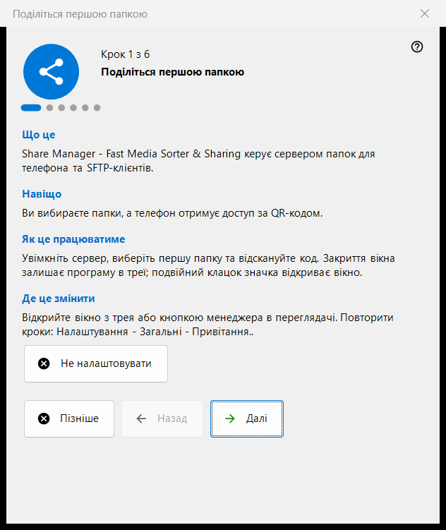
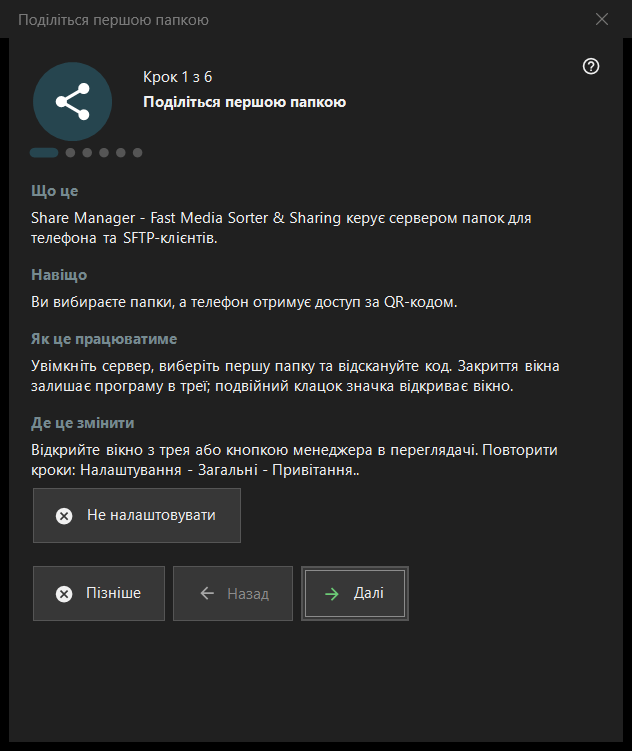

Поділіться першою папкою
Призначення
Майстер із шести кроків, який веде від нуля до папки, що роздається на телефон: вмикає сервер, вибирає першу папку, задає порт і основні параметри та завершується перевіркою стану. Відкривається під час першого запуску Share Manager, і його можна запустити знову з налаштувань.


Порядок дій
- Прочитайте вступ і натисніть «Далі».
- На кроці «Увімкнути сервер» один раз натисніть кнопку й підтвердьте запит прав адміністратора.
- Виберіть першу папку та її параметри.
- Залиште порт або змініть його.
- Задайте мову, запуск і параметри локальної мережі.
- На останній сторінці перевірте стан, відкрийте QR-код і натисніть «Готово».
Елементи вікна
Кроки та кнопки
У нижньому рядку показано «Крок N з 6». «Назад» і «Далі» перемикають сторінки, на останній сторінці «Далі» стає «Готово», «Пізніше» закриває майстер і зберігає вже підтверджене, а «Не налаштовувати» закриває його остаточно. На кожній сторінці є чотири короткі блоки: «Що це», «Навіщо», «Як це працюватиме» та «Де це змінити».
Увімкнути сервер
До цього кроку сервер вимкнено. Кнопка вмикання один раз просить права адміністратора й додає одне правило брандмауера Windows для програми. Якщо скасувати запит, сервер залишається вимкненим, і можна спробувати ще раз; якщо він уже ввімкнений, сторінка повідомляє, що додатковий запит прав не потрібен.
Перша папка
Виберіть папку, потім її назву, профіль і доступ. «Додати перший ресурс зараз..» відкриває майстер ресурсу. Щоб продовжити, потрібна хоча б одна папка. Параметри передаються серверу, а папки можна й надалі редагувати в списку головного вікна.
Порт
«Обирає система» призначає порт один раз і зберігає його; «Фіксований порт:» дає змогу ввести власний номер, наприклад для пробросу порту на роутері. Номер записується в кожен QR-код і файл .fmscfg, тому якщо змінити його пізніше, уже видані коди перестануть працювати. Правило брандмауера належить програмі, а не порту.
Основні налаштування
«Мова інтерфейсу», «Запускати при вході в Windows», «Відкривати вікно менеджера під час запуску» та «Тільки локальна мережа (без доступу з інтернету)». Режим локальної мережі вимикає проброс порту та інтернет-адресу. Параметр запуску у версії з Microsoft Store керується в налаштуваннях Windows.
Завершення
Остання сторінка перевіряє сервер і вибрані папки та показує результат; зелений стан означає, що роздача справді працює з доступом до папок. «QR-код для телефону» відкриває код, а «Оновити» повторює перевірку. Якщо стан потребує уваги, усуньте причину в головному вікні або поверніться до кроку з папкою.
Повторний запуск майстра
Налаштування - Загальні - «Привітання..» відкриває меню з пунктом «Повторити налаштування папок», який знову відкриває цей майстер.
Налаштування менеджера · Налаштування спільного доступу SFTP · Налаштування сервера обміну